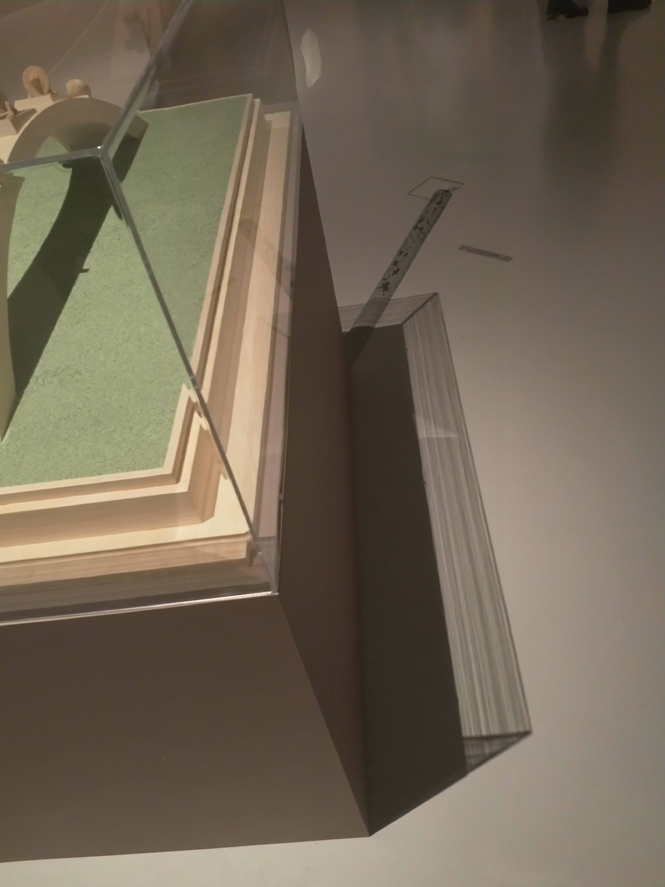
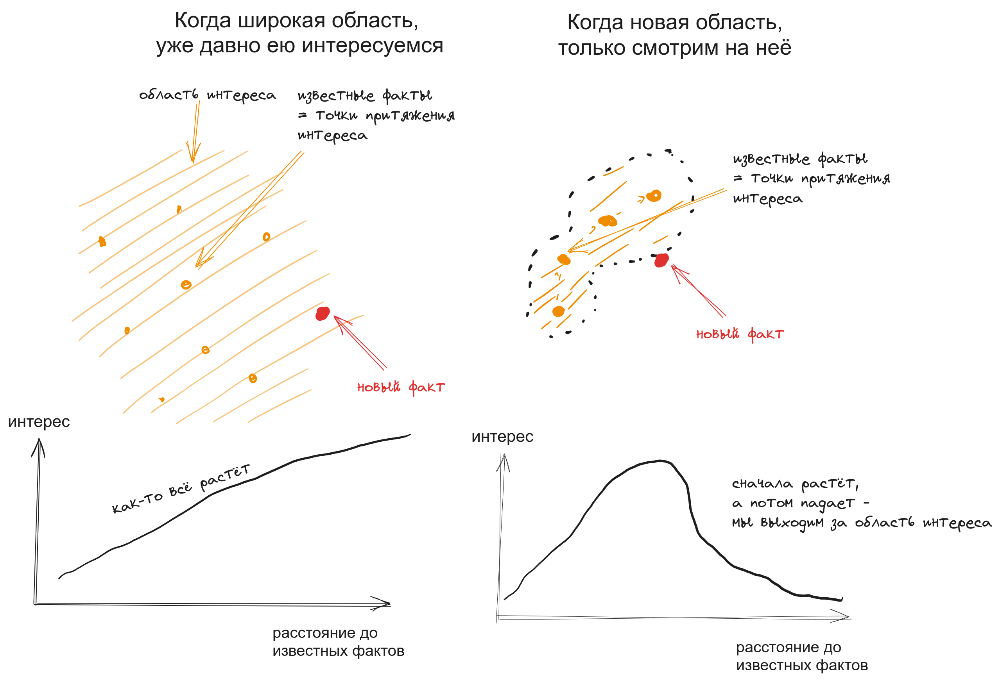

Warning
Это — статья “для общего образования”. Тут будут абстрактные рассуждения. За практическими следствиями смотрите “обратные ссылки” :)
Warning
“Резонирует” значит “привлекает непроизвольное внимание”. Речь пойдёт про характеристики этого непроизвольного внимания. В статьях для непроизвольного внимания выделяют “интерес”, “новизну” и “контраст”. Ниже — моя интерпретация понятий и их приложение к организации информации. Я не психолог и могу вас нагло обмануть в этой интерпретации.
Тьяго Форте, создатель методики P.A.R.A. предлагает сохранять в заметки “всё, что привлекает внимание, что резонирует”. Я думаю в том же русле.
Принцип “сохраняй что резонирует” привлекателен тем, что вам не надо “думать”. Вы остаётесь в рамках комфортного быстрого мышления. Из кучи информации, которую мы видим всё время мы можем не тратя сил отобрать кандидатов для сохранения. Не прям всё что приглянулось стоит тащить в систему и не прям всё, что не приглянулось в систему тащить не надо, но о штуках, выбивающихся из идеи “сохраняй что вызывает интерес” порассуждаем в другой раз. А пока поговорим про сам принцип и почему он в общем и целом работает. Чтобы понять это, стоит покопаться в его нутре. Так что же вызывает у нас “чувство резонанса”?
Что вызывает у нас резонанс. Непроизвольное внимание
Это чувство, “блин, вот это вот что-то интересное, надо сохранить!” это работа вашего непроизвольного внимания.
- Непроизвольное внимание привлекается к раздражителям, которые мы субъективно считаем новыми.
- Непроизвольное внимание привлекается к раздражителям, для которых новизна (контраст) наш фоновый интерес наша “открытость” становится достаточно большой
Если мы в целом не очень много думаем в сторону раздражителя, только очень “яркий” образ мы воспримем как контрастный и среагируем. Если же мы глубоко в теме, даже малейшее различие будет заметно и привлечёт внимание.
Example
- Я не особо разбираюсь в растениях. Чтобы цветок привлёк моё внимание, он должен быть прям ОЧЕНЬ необычным. Иначе это для меня лишь фон.
- Я разбираюсь в физике. Как-то раз меня привлекло просто преломление света на витрине в Эрмитаже: я не ожидал, что такое стекло может давать такой результат. Вряд ли кто-то ещё смотрел на витрину, а не на экспонаты внутри.
Просто гляньте на это преломление света. Откуда оно такое?
Составляющие непроизвольного внимания
Новизна
Новизна — расположение стимула в “поле интересов”. Насколько он далёк от того, что мы уже видели, знали и ожидали увидеть.
Пример: рассказывая лекцию, преподаватель привёл пример из категории “18+“. Хотя он мог говорить это всё тем же тоном, что и остальную лекцию, студенты встрепенуться.
Контраст
Контраст — расположение стимула по оси “интенсивности”. Насколько он количественно отличается от того, что мы уже видели.
Пример: рассказывая лекцию, преподаватель вдруг сильно повысил голос. Хотя он мог говорить всё ту же тему, которой посвящена и остальная лекция, студенты встрепенутся.
N.B.: контраст или новизна. Я вижу новизну и контраст как “ось X” и “ось Y” гипотетического “пространства, на которое мы обращаем внимание”. Но для некоторых случаев такое разделение оправдано (как пример с преподавателем), а в некоторых — притянуто за уши. Если я люблю котов и вижу нового кота, вряд ли я думаю “о, он контрастен”. Скорее его контрастность (например увидел первого белого кота, а раньше все были чёрные) будет восприниматься мной как “новизна”.
Фоновый интерес
фоновый интерес — насколько нас в целом волнует область, в которой оказался стимул.
Пример: мой фоновый интерес к физике сильно больше, чем к растениям. Любую штуку, которую я восприму как “относится к физике” мне будет хотеться рассмотреть.
Открытость к раздражителям
открытость к раздражителям — насколько сейчас мы сосредоточены на чём-то одном или находимся в безмятежности. Рассеянное ли у нас мышление или сфокусированное. Насколько широки наши мысленные дроби.
Пример: рассеянность. Как-то я был настолько увлечён, что моё внимание не привлёк собственный велосипед на парковке. Так он там ночь и переночевал.
Непроизвольное внимание и наши знания. Приложение к области или к точке
Напоследок, совсем “абстрактное” рассуждение.
Я понял, что бывают случаи, когда что-то “очень новое” вызывает у меня большой интерес. А бывает, что нет. Когда же так происходит?

Наш интерес проявляется двояко:
- “Широкая область интересов”. Часто нам в целом интересна какая-то область. “Физика”. “Продуктивность”. “Лютневая музыка”. И раздражитель относится к этой же области. В таком случае “новое” для нас фактически любое отличие выше некоторого порога. Чем более “новый” для нас раздражитель, тем он привлекательнее. Крайне необычная идея в продуктивности вызовет ваш интерес.
- “Различные точки интересов”. Бывает, что ещё нет никакой области. Просто несколько вещей, что вы сейчас изучаете. Тогда слишком “новый” раздражитель может быть далеко от всех точек и не вызывать интерес. “Новый” должен быть не слишком уж знакомый, но и не слишком уж далёкий. Необычная идея по Zettelkasten не вызовет ваш интерес, если сейчас вы разбираетесь с P.A.R.A.
Подведём итог.
Так что же “резонирует”? Почему “резонирующий материал стоит сохранять”?. Чувство интереса к материалу — это ваше непроизвольное внимание. Оно возникает, если материал кажется достаточно новым (контрастным) в рамках тех знаний, что у нас есть. Но при этом он всё же “ложится” на имеющиеся знания. Именно эта характеристика — новизна, но при этом принадлежность к области интересов — и значит, что “возможно, материал будет полезен в будущем и его стоит сохранить”.
Следствия
- чем больше ты знаешь, чем восхитительнее кажется мир. Ведь к тем большим объектам привлекается твоё непроизвольное внимание.
- чем больше ты копаешь в теме, тем более мелкие изменения будут казаться достойными твоего внимания. Из этого, в свою очередь, вытекает философский вопрос “когда стоит остановиться?“. Копая глубже, появляется желание копать ещё глубже. Читать больше книг, переходить по большему числу ссылок.
- наоборот, для тем, которые тебе не особо интересны, ты не будешь сохранять каждую мелочь. Отличия просто не покажутся тебе достаточно существенны.
- “в общем и целом” принцип keep what resonate работает, потому что резонанс — значит штука достаточно нова и относится к области твоих интересов
- парадокс находок при уборке. Мы не хотим выкидывать вещь, которую нашли во время уборки, потому что она привлекла наше внимание. Она привлекла внимание, потому что давно не попадалось, мы её “вспомнили” и радость воспоминания отразилось на нашем представлении о вещи. Но само то, что мы напрочь забыли про вещь к этому моменту и она лежала не нужная кучу времени — сигнал, что она нам не нужна и может её-то как раз стоит выкинуть.
обсуждение в Телеграм